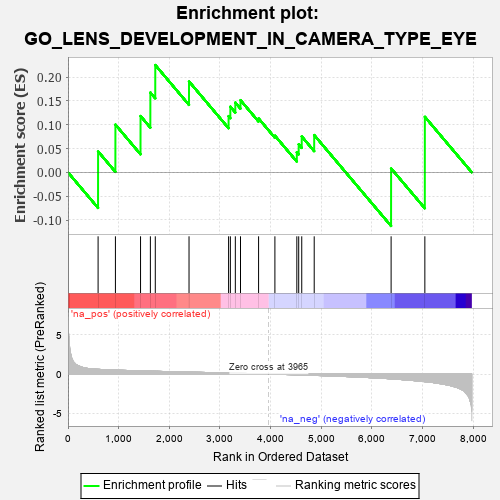
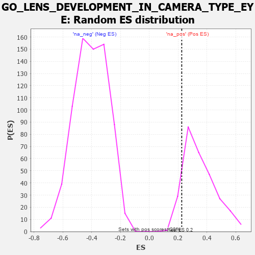

| | | Dataset | 7d |
| Phenotype | NoPhenotypeAvailable |
| Upregulated in class | na_pos |
| GeneSet | GO_LENS_DEVELOPMENT_IN_CAMERA_TYPE_EYE |
| Enrichment Score (ES) | 0.22524147 |
| Normalized Enrichment Score (NES) | 0.6432255 |
| Nominal p-value | 0.92805755 |
| FDR q-value | 0.96814364 |
| FWER p-Value | 1.0 |
Table: GSEA Results Summary

Fig 1: Enrichment plot: GO_LENS_DEVELOPMENT_IN_CAMERA_TYPE_EYE
Profile of the Running ES Score & Positions of GeneSet Members on the Rank Ordered List
| PROBE | GENE SYMBOL | GENE_TITLE | RANK IN GENE LIST | RANK METRIC SCORE | RUNNING ES | CORE ENRICHMENT | | 1 | PITX3 | | | 594 | 0.596 | 0.0439 | Yes |
| 2 | TDRD7 | | | 936 | 0.498 | 0.1002 | Yes |
| 3 | PDS5B | | | 1432 | 0.403 | 0.1182 | Yes |
| 4 | CDK4 | | | 1626 | 0.370 | 0.1675 | Yes |
| 5 | MEIS1 | | | 1723 | 0.351 | 0.2252 | Yes |
| 6 | HIPK2 | | | 2389 | 0.247 | 0.1908 | No |
| 7 | PAX6 | | | 3170 | 0.127 | 0.1179 | No |
| 8 | FZR1 | | | 3205 | 0.122 | 0.1379 | No |
| 9 | SMAD3 | | | 3303 | 0.105 | 0.1465 | No |
| 10 | MED1 | | | 3405 | 0.089 | 0.1514 | No |
| 11 | SKI | | | 3762 | 0.032 | 0.1131 | No |
| 12 | WNT2 | | | 4084 | -0.021 | 0.0770 | No |
| 13 | WNT5B | | | 4517 | -0.098 | 0.0422 | No |
| 14 | ABI2 | | | 4554 | -0.106 | 0.0588 | No |
| 15 | GATA3 | | | 4614 | -0.120 | 0.0753 | No |
| 16 | DLG1 | | | 4860 | -0.169 | 0.0782 | No |
| 17 | CDON | | | 6378 | -0.607 | 0.0082 | No |
| 18 | CTNS | | | 7044 | -0.965 | 0.1165 | No |
Table: GSEA details [plain text format]

Fig 2: GO_LENS_DEVELOPMENT_IN_CAMERA_TYPE_EYE: Random ES distribution
Gene set null distribution of ES for GO_LENS_DEVELOPMENT_IN_CAMERA_TYPE_EYE